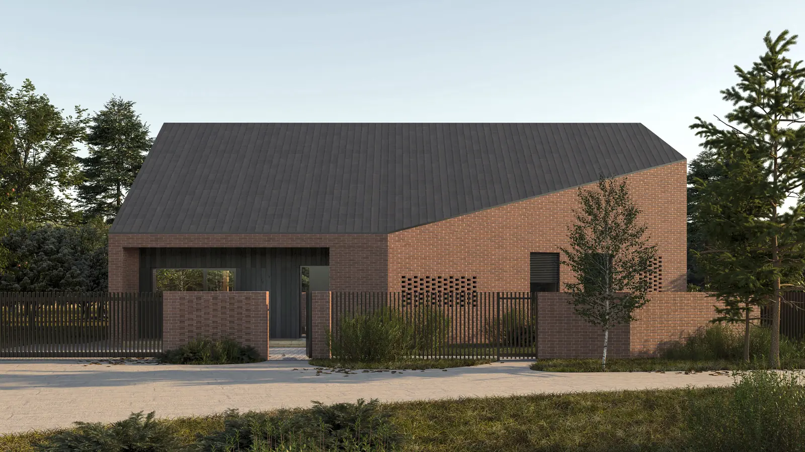
Projektujemy, aż usłyszymy: to jest dokładnie to
Szeszuła Architekci - pracownia architektury, urbanistyki i wnętrz w Poznaniu. Domy, rezydencje, zabudowa wielorodzinna i koncepcje urbanistyczne, od warunków zabudowy po nadzór nad budową.
Zobacz projektyul. Jana Matejki 48/49, Poznań - +48 666 664 661
Każda działka to inny dom
Skarpa, łąka, działka trójkątna albo podłużna, sąsiedztwo dwóch ulic - od tego zaczynamy. Nie narzucamy własnej stylistyki: dom ma być przede wszystkim domem inwestorów, najlepszym funkcjonalnie, technologicznie i kosztowo.

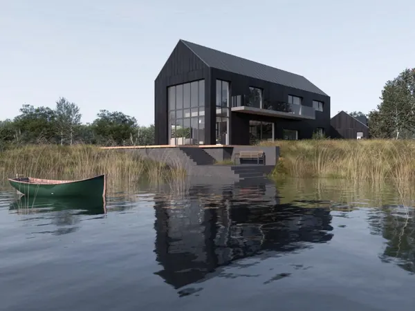
Osada nad rozlewiskiem
Dom i budynek gospodarczy z palonej deski Shou Sugi Ban, na skarpie przy ujściu Samy do Warty.

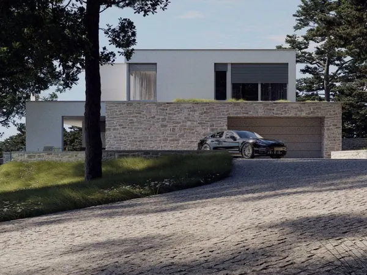
Dom na skarpie
Wkomponowany w drzewostan na szczycie zielonej skarpy, otwarty szeroko na panoramę okolicy.

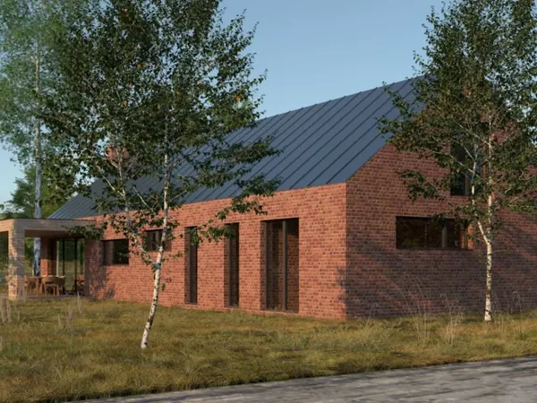
Dom na łące
Cegła rozbiórkowa ze starej stodoły i jak najmniejsza ingerencja w naturalny ogród.

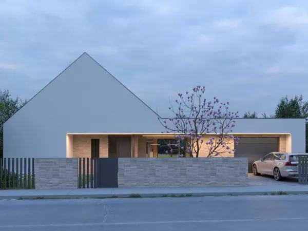
Dom do wewnątrz
Zamknięty od strony dwóch ulic, w całości zwrócony do prywatnego ogrodu.

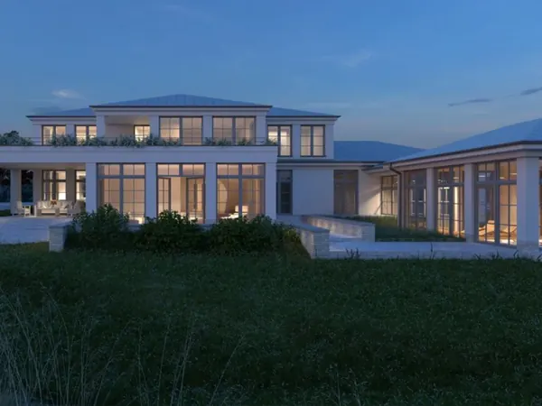
Rezydencja miejska
Willa na trzech poziomach działki ze spadkiem, z kaskadą tarasów i zielonym patio.

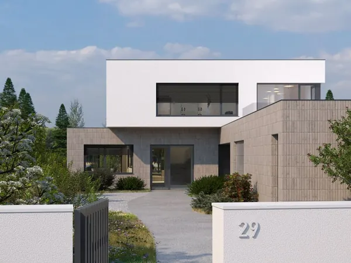
Dom na podłużnej działce
Ceramiczny parter osadzony w krajobrazie unosi lżejszą, białą bryłę piętra.

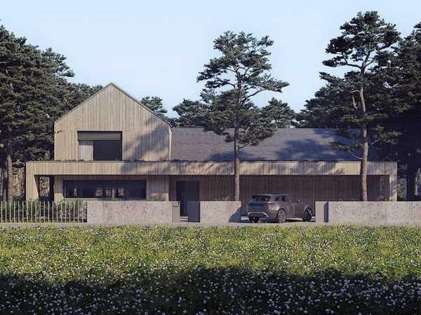
Drewniany dom pod lasem
Wkomponowany w istniejącą zieleń. Projekt i pozwolenie na budowę: 2022-2023.

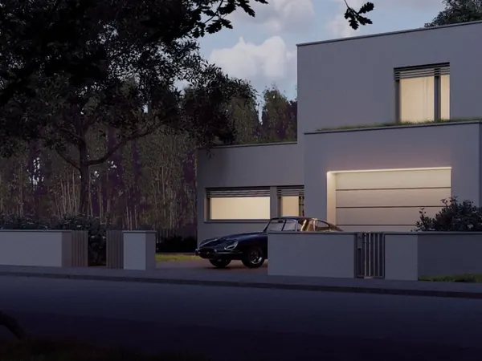
Dom energooszczędny
Prefabrykacja i dwa zielone dziedzińce, które wpuszczają słońce od rana do wieczora.

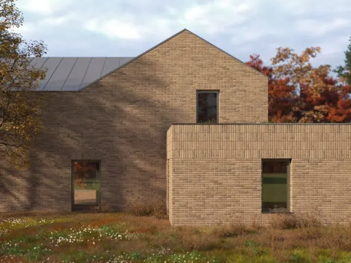
Dom z widokiem na jezioro
Antresola, dziedziniec od frontu i ceglana elewacja, która wpisuje dom w krajobraz.

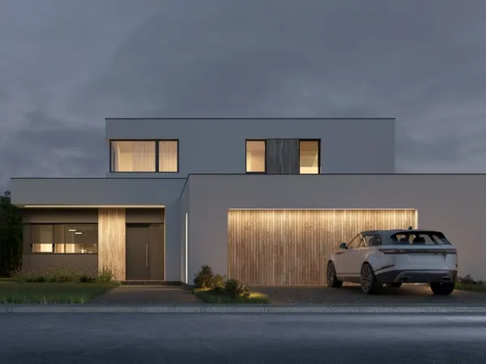
Dom Bryłowy
Trzy zestawione bryły: przymknięte od ulicy, szeroko otwarte na ogród i ścianę lasu.

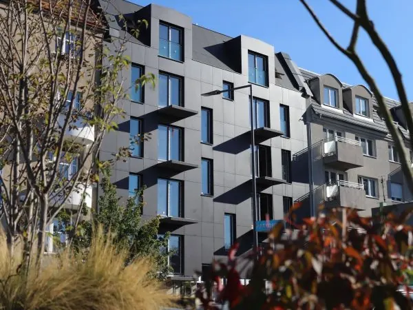
Kącik
Kamienica uzupełniająca puste miejsce w pierzei łazarskiej ulicy Kącik.

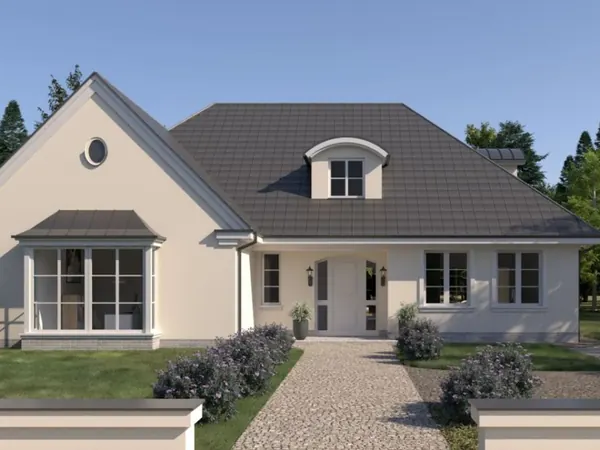
Dom klasyczny
Zwarta bryła, symetryczny front i wyważony detal: gzymsy, opaski, podziały okien.


Od kreski do projektu
- Rozmowa i działkaZbieramy potrzeby inwestorów i analizujemy działkę: kierunki świata, światło, sąsiedztwo. Pomagamy uzyskać decyzję o warunkach zabudowy.
- RysunekPrzekładamy rozmowę na rzuty, przekroje i wizualizacje. Dopracowujemy je tak długo, aż usłyszymy, że to jest dokładnie to.
- Branże od początkuKoncepcję od wczesnego etapu konsultujemy z projektantami konstrukcji i instalacji, żeby od razu optymalizować projekt.
- Projekt budowlany i technicznyPełnobranżowa dokumentacja i kontrola procedur urzędowych.
- Budowa i wnętrzaNadzór nad budową, a na końcu aranżacja wnętrz.
Urbanistyka: od szkicu dzielnicy do decyzji
Koncepcje urbanistyczne i programowo-przestrzenne dla terenów pod zabudowę, także te potrzebne do uzyskania decyzji o warunkach zabudowy i zmiany przeznaczenia terenu. Projektujemy osiedla, kwartały zabudowy i nowe dzielnice.
- „Zielone Wzgórza” - nowa dzielnica w Pile, konkurs urbanistyczny
- Zagospodarowanie „Wolnych Torów” w Poznaniu - konkurs urbanistyczny
- „Nowe Podolany” - projekt urbanistyczny i rysunki koncepcyjne
- Osiedle w rejonie Fortu VI przy ul. Jasielskiej w Poznaniu

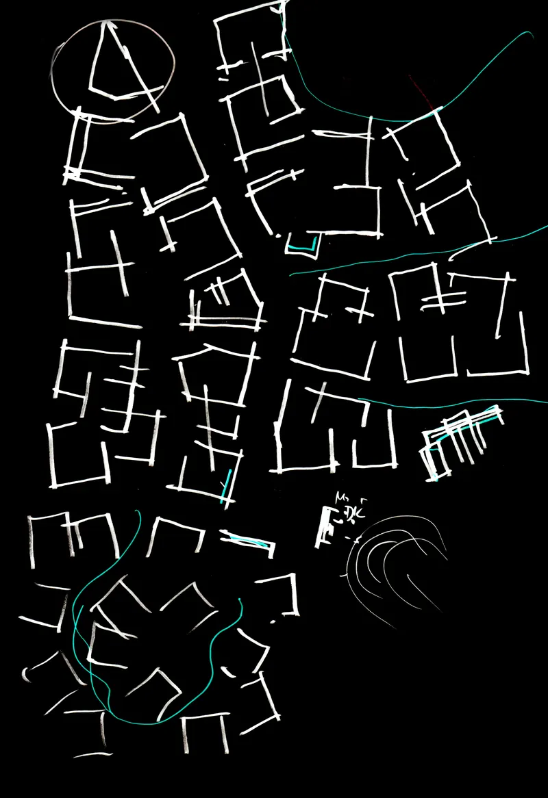


Wnętrza
Projekty wnętrz domów i mieszkań: minimalistyczne, funkcjonalne, nieszablonowe, tworzone według wymagań mieszkańców. Często kończymy nimi dom, który sami zaprojektowaliśmy.

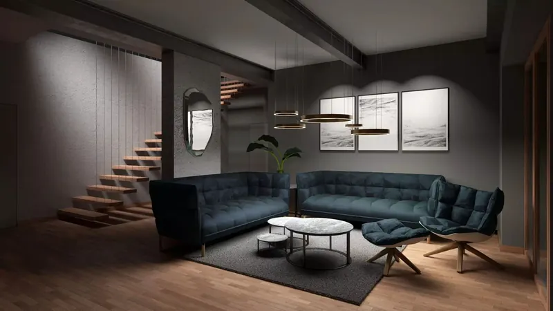
Dom w Puszczykowie
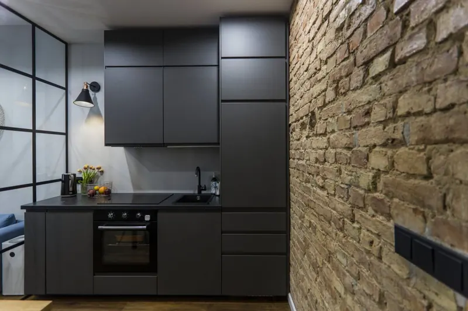
Kancelaria i kawalerka w kamienicy, Stare Miasto
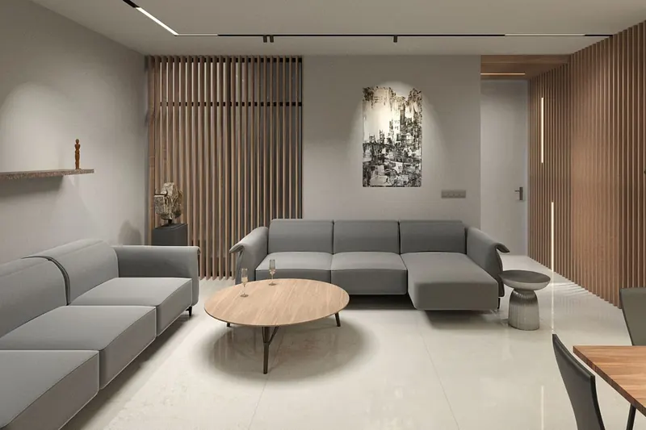
Mieszkanie na osiedlu Wille Bukowska
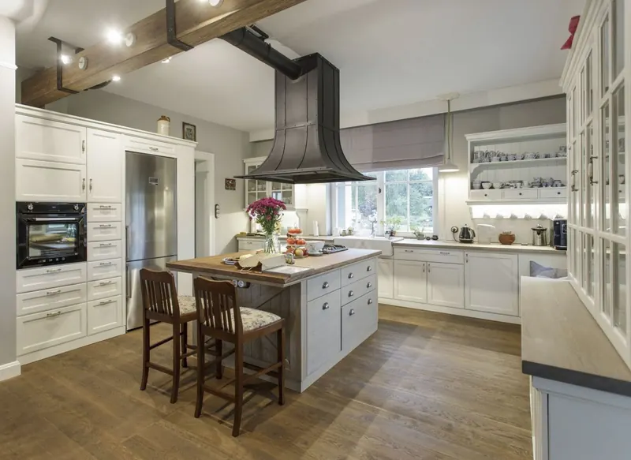
Dom jednorodzinny nad jeziorem - realizacja
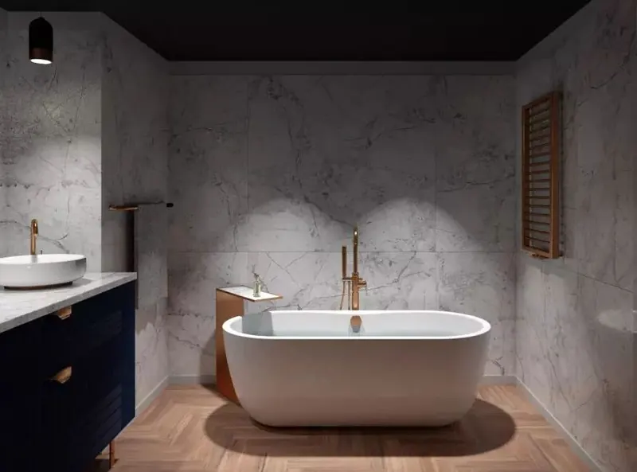
Projekt łazienki z wolnostojącą wanną
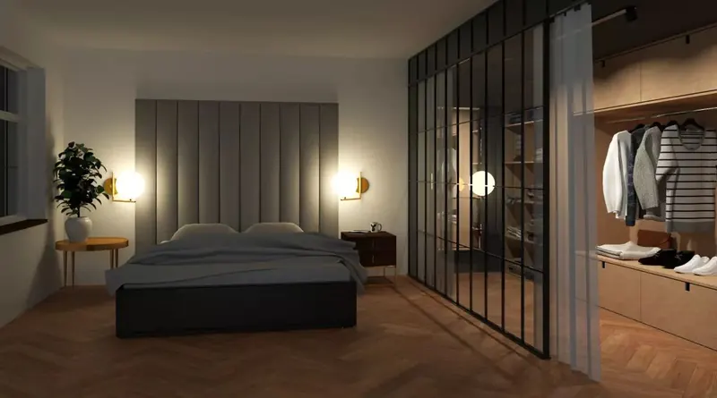
Projekt sypialniKancelaria i kawalerka, Stare Miasto. Podział wnętrza XIX-wiecznej kamienicy na dwa lokale. Zachowaliśmy drewniane posadzki, odkryliśmy cegłę i wyeksponowaliśmy masywne nadproża.
Wille Bukowska. Zaczęliśmy od zmian w układzie: przejście na piętro przenieśliśmy z salonu do nowego holu, a korytarz poszerzyliśmy i doświetliliśmy.
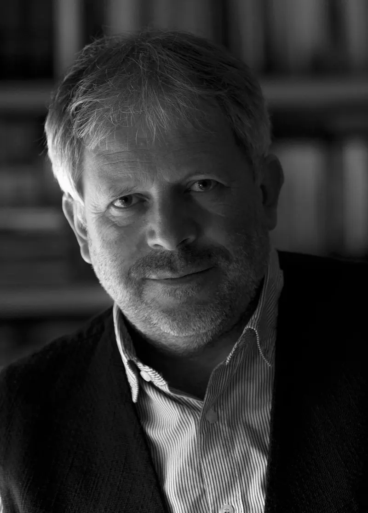
Pracownia
Wykonujemy pełnobranżowe projekty architektoniczne i urbanistyczne: od decyzji o warunkach zabudowy, przez wszystkie fazy projektu i procedury urzędowe, po nadzór nad budową i aranżację wnętrz.
Twórcą pracowni i jej wiodącym projektantem jest dr inż. arch. Waldemar Szeszuła - architekt, urbanista, pracownik naukowy i dydaktyczny Wydziału Architektury Politechniki Poznańskiej, sędzia sądu konkursowego Stowarzyszenia Architektów Polskich w Poznaniu oraz sądu dyscyplinarnego Wielkopolskiej Okręgowej Izby Architektów.
Projektujemy domy i rezydencje dla inwestorów indywidualnych, budynki i osiedla wielorodzinne dla deweloperów, obiekty usługowe i użyteczności publicznej, przebudowy, nadbudowy i rozbudowy. Pracownia jest w Poznaniu, projekty prowadzimy w całym kraju.
Porozmawiajmy o działce
+48 666 664 661- pracownia@szeszula.pl
- Pracownia
- ul. Jana Matejki 48/49 m. 30
60-767 Poznań